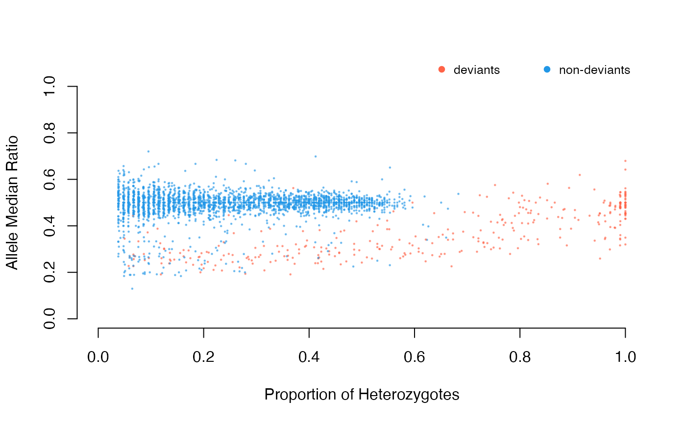
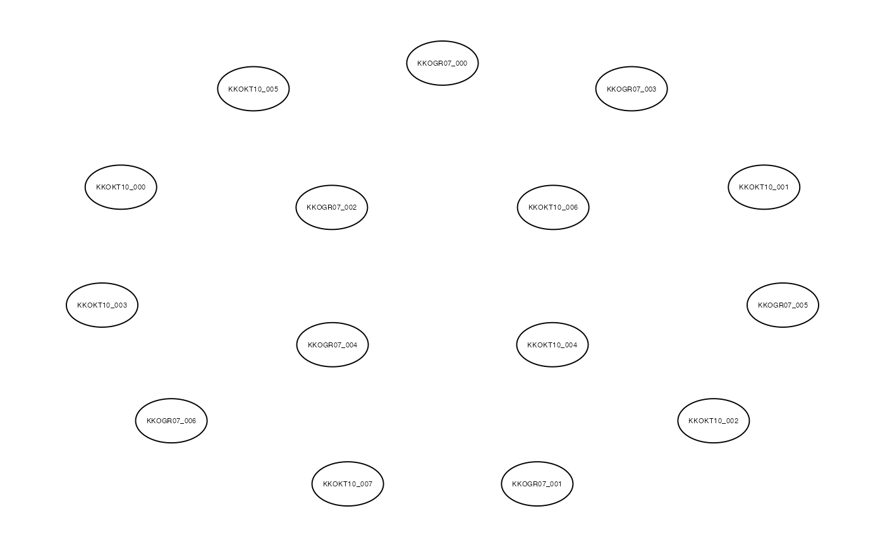

This function calculates Vst (variant fixation index) for populations given a list of duplicated loci
Arguments
- AD
data frame of total allele depth values of (duplicated, if
id.listis not provided) SNPs- pops
character. A vector of population names for each individual. Must be the same length as the number of samples in AD
- id.list
character. A vector of duplicated SNP IDs. Must match the IDs in the AD data frame
- qGraph
logical. Plot the network plot based on Vst values (see details)
- verbose
logical. show progress
- ...
additional arguments passed to
qgraph
Details
Vst is calculated with the following equation
$$V_{T} = \frac{ V_{S} }{V_{T}}$$ where VT is the variance of normalized
read depths among all individuals from the two populations and VS is the
average of the variance within each population, weighed for population size
(see reference for more details)
See qgraph help for details on qgraph output
References
Redon, Richard, et al. Global variation in copy number in the human genome. nature 444.7118 (2006)
Examples
if (FALSE) data(alleleINF)
data(ADtable)
DD<-dupGet(alleleINF)
#> categorizing deviant SNPs with
#> excess of heterozygotes z.all & chi.all

ds<-DD[DD$dup.stat=="duplicated",]
ad<-ADtable[match(paste0(ds$CHROM,".",ds$POS),paste0(ADtable$CHROM,".",ADtable$POS)),]
vst(ad,pops=substr(colnames(ad)[-c(1:4)],1,11))
#>
|
| | 0%
|
| | 1%
|
|= | 2%
|
|= | 3%
|
|== | 4%
|
|== | 5%
|
|=== | 6%
|
|=== | 7%
|
|==== | 8%
|
|==== | 9%
|
|===== | 10%
|
|====== | 11%
|
|====== | 12%
|
|======= | 13%
|
|======= | 14%
|
|======== | 15%
|
|======== | 16%
|
|========= | 17%
|
|========= | 18%
|
|========== | 19%
|
|========== | 20%
|
|========== | 21%
|
|=========== | 22%
|
|=========== | 23%
|
|============ | 24%
|
|============ | 25%
|
|============= | 26%
|
|============= | 27%
|
|============== | 28%
|
|============== | 29%
|
|=============== | 30%
|
|================ | 31%
|
|================ | 32%
|
|================= | 33%
|
|================= | 34%
|
|================== | 35%
|
|================== | 36%
|
|=================== | 37%
|
|=================== | 38%
|
|==================== | 39%
|
|==================== | 40%
|
|==================== | 41%
|
|===================== | 42%
|
|===================== | 43%
|
|====================== | 44%
|
|====================== | 45%
|
|======================= | 46%
|
|======================= | 47%
|
|======================== | 48%
|
|======================== | 49%
|
|========================= | 50%
|
|========================== | 51%
|
|========================== | 52%
|
|=========================== | 53%
|
|=========================== | 54%
|
|============================ | 55%
|
|============================ | 56%
|
|============================= | 57%
|
|============================= | 58%
|
|============================== | 59%
|
|============================== | 60%
|
|============================== | 61%
|
|=============================== | 62%
|
|=============================== | 63%
|
|================================ | 64%
|
|================================ | 65%
|
|================================= | 66%
|
|================================= | 67%
|
|================================== | 68%
|
|================================== | 69%
|
|=================================== | 70%
|
|==================================== | 71%
|
|==================================== | 72%
|
|===================================== | 73%
|
|===================================== | 74%
|
|====================================== | 75%
|
|====================================== | 76%
|
|======================================= | 77%
|
|======================================= | 78%
|
|======================================== | 79%
|
|======================================== | 80%
|
|======================================== | 81%
|
|========================================= | 82%
|
|========================================= | 83%
|
|========================================== | 84%
|
|========================================== | 85%
|
|=========================================== | 86%
|
|=========================================== | 87%
|
|============================================ | 88%
|
|============================================ | 89%
|
|============================================= | 90%
|
|============================================== | 91%
|
|============================================== | 92%
|
|=============================================== | 93%
|
|=============================================== | 94%
|
|================================================ | 95%
|
|================================================ | 96%
|
|================================================= | 97%
|
|================================================= | 98%
|
|==================================================| 99%
|
|==================================================| 100%

#> KKOGR07_000 KKOGR07_001 KKOGR07_002 KKOGR07_003 KKOGR07_004
#> KKOGR07_000 NA NA NA NA NA
#> KKOGR07_001 NaN NA NA NA NA
#> KKOGR07_002 NaN NaN NA NA NA
#> KKOGR07_003 NaN NaN NaN NA NA
#> KKOGR07_004 NaN NaN NaN NaN NA
#> KKOGR07_005 NaN NaN NaN NaN NaN
#> KKOGR07_006 NaN NaN NaN NaN NaN
#> KKOKT10_000 NaN NaN NaN NaN NaN
#> KKOKT10_001 NaN NaN NaN NaN NaN
#> KKOKT10_002 NaN NaN NaN NaN NaN
#> KKOKT10_003 NaN NaN NaN NaN NaN
#> KKOKT10_004 NaN NaN NaN NaN NaN
#> KKOKT10_005 NaN NaN NaN NaN NaN
#> KKOKT10_006 NaN NaN NaN NaN NaN
#> KKOKT10_007 NaN NaN NaN NaN NaN
#> KKOGR07_005 KKOGR07_006 KKOKT10_000 KKOKT10_001 KKOKT10_002
#> KKOGR07_000 NA NA NA NA NA
#> KKOGR07_001 NA NA NA NA NA
#> KKOGR07_002 NA NA NA NA NA
#> KKOGR07_003 NA NA NA NA NA
#> KKOGR07_004 NA NA NA NA NA
#> KKOGR07_005 NA NA NA NA NA
#> KKOGR07_006 NaN NA NA NA NA
#> KKOKT10_000 NaN NaN NA NA NA
#> KKOKT10_001 NaN NaN NaN NA NA
#> KKOKT10_002 NaN NaN NaN NaN NA
#> KKOKT10_003 NaN NaN NaN NaN NaN
#> KKOKT10_004 NaN NaN NaN NaN NaN
#> KKOKT10_005 NaN NaN NaN NaN NaN
#> KKOKT10_006 NaN NaN NaN NaN NaN
#> KKOKT10_007 NaN NaN NaN NaN NaN
#> KKOKT10_003 KKOKT10_004 KKOKT10_005 KKOKT10_006 KKOKT10_007
#> KKOGR07_000 NA NA NA NA NA
#> KKOGR07_001 NA NA NA NA NA
#> KKOGR07_002 NA NA NA NA NA
#> KKOGR07_003 NA NA NA NA NA
#> KKOGR07_004 NA NA NA NA NA
#> KKOGR07_005 NA NA NA NA NA
#> KKOGR07_006 NA NA NA NA NA
#> KKOKT10_000 NA NA NA NA NA
#> KKOKT10_001 NA NA NA NA NA
#> KKOKT10_002 NA NA NA NA NA
#> KKOKT10_003 NA NA NA NA NA
#> KKOKT10_004 NaN NA NA NA NA
#> KKOKT10_005 NaN NaN NA NA NA
#> KKOKT10_006 NaN NaN NaN NA NA
#> KKOKT10_007 NaN NaN NaN NaN NA